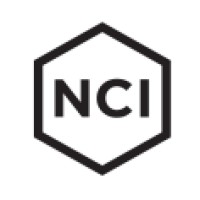
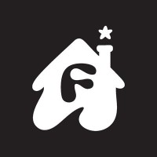

Software engineer · Technical utility player
“We’ve always done it this way.”
“We used to do it that way.”
I’m Annie. I turn the first sentence into the second.
Scrapers, API integrations, internal tools, CRM build-outs, ad campaigns, you name it. If it needs doing and no one is quite sure how, hand it to me.
$100K+
Software spend avoided
Built an in-house manufacturing ERP as one of two engineers, replacing paper workflows.
90%
Of prospecting time freed
Replaced manual lead research with an automated scraping and data pipeline.
$2.86
Cost per app install
Launched a company’s first Google Ads campaign: ~700 installs on ~$2K in 9 days.
Experience

New Century Industries
Jun 2026 to present
Software Engineer
- Saved $100K+ by building and deploying an in-house manufacturing ERP as one of two engineers, covering production, inventory, quality, purchasing and shipping.
- Owned major features from concept through deployment as de facto product manager, UI/UX lead and engineer.
TypeScript · React · Next.js · Node.js · PostgreSQL · Claude Code
Halfcube
Jul 2026 to present
Founder
- Freelance website creation and design.

Fancy
Feb 2026 to May 2026
Senior Growth Associate
- Launched the company’s first Google Ads campaign: ~700 app installs on ~$2K spend ($2.86 CPI) in 9 days, across 10–20 A/B-tested variants and hand-coded HTML5 dynamic ads.
- Rebuilt operations as the sole remaining business team member after a restructuring: recovered credentials and vendor relationships, and created structure.
- Learned Synctera in under a week to support compliance during an acquired entity’s wind-down.
Fancy
Aug 2025 to Feb 2026
Revenue Operations Engineer, promoted from intern
- Replaced manual prospecting (90% of the sales team’s time) with a web scraping, data wrangling and Excel VBA pipeline delivering thousands of leads.
- Engineered a cross-platform API integration automated with GitHub Actions, removing copy-paste workflows at no added cost.
- Owned the HubSpot CRM build-out: pipelines, dashboards, reports and website lead-capture forms.
- Built a Python Reddit scraper and applied AI analysis to deliver competitive intelligence to leadership.
New Century Industries
Jul 2025 to Aug 2025
System Engineering Intern
- Eliminated third-party label software by extending a Microsoft Access label-printing app with VBA and SQL for barcode workflows.
- Went from no QuickBooks experience to owning its maintenance and troubleshooting.
Brigham Young University
May 2023 to Aug 2024
Utilities Lead Intern
- Processed ~300 monthly utility invoices from 9+ vendors and wrote the 30+ page operating manual for the workflow.
- Operated and troubleshot the internal Python programs that parsed bills, reconciled data and automated entry.
Education
Brigham Young University
Business Management, 2025. Computer science coursework in C++ and Python; mathematics through Calculus III.
Skills & tools
- Claude Code
- Cursor
- Python
- API Integrations
- Excel VBA
- Microsoft Access (SQL/Macros)
- Web Scraping
- Prompt Engineering
- Zapier
- n8n
- TypeScript
- React
- Next.js
- Node.js
- PostgreSQL
- GitHub Actions
- Vendor Management
- Cross-Functional Projects
- Google Ads
- A/B Testing
- HTML5 Dynamic Ads
- HubSpot CRM
- Apple Business Manager
- Synctera
- QuickBooks
- Google Workspace
- Microsoft Office
Bonus content